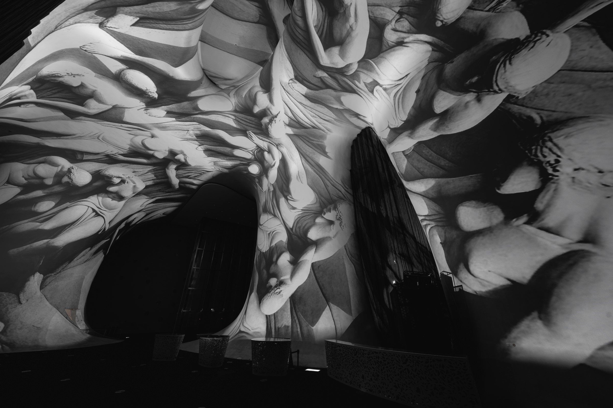
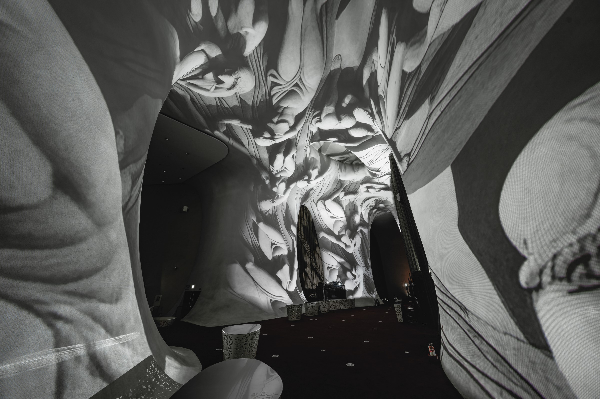
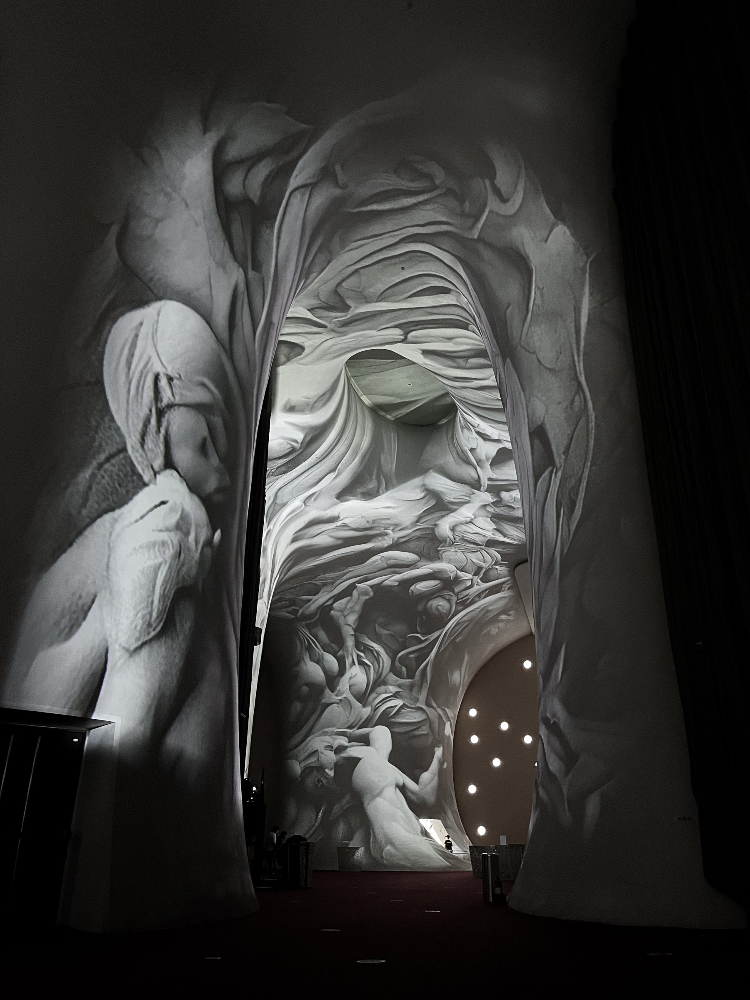
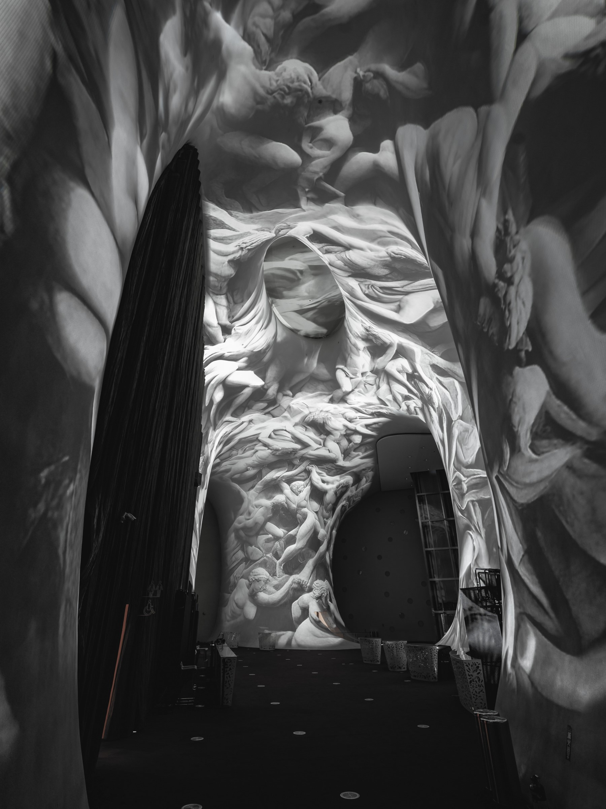
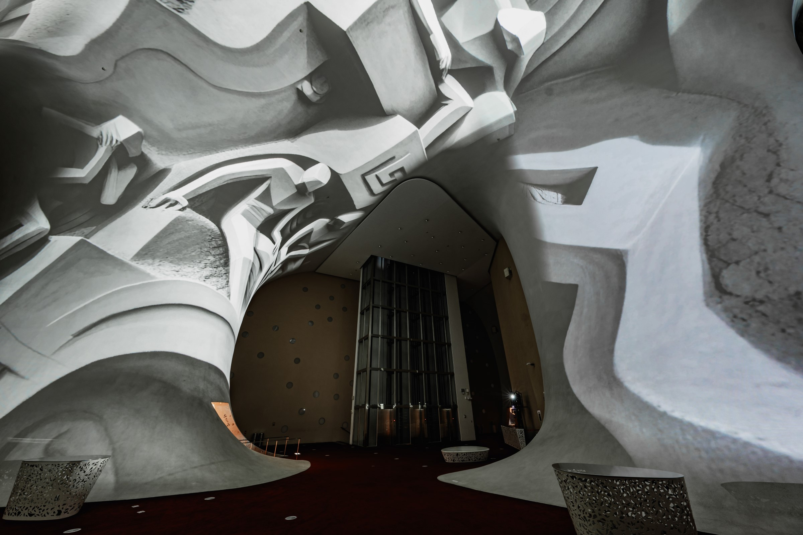
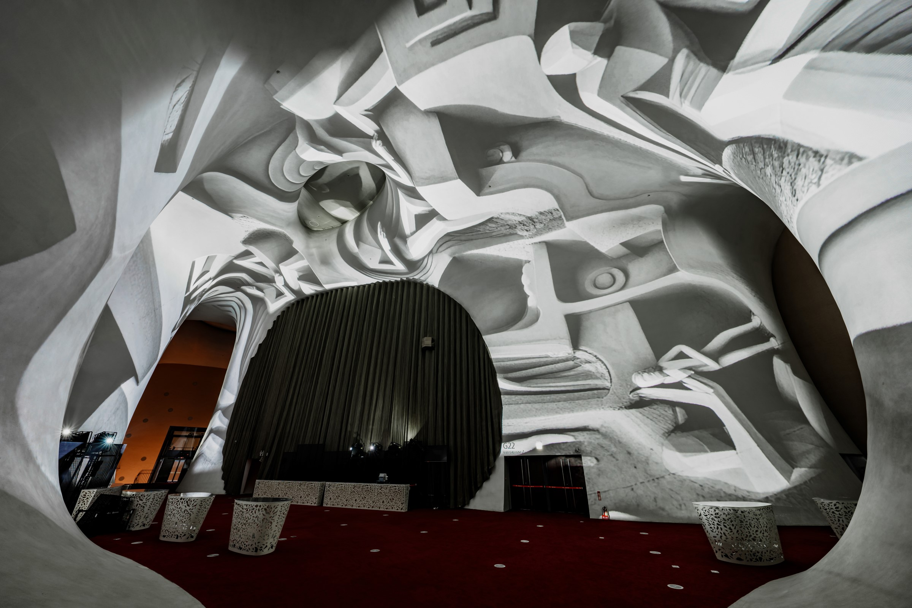
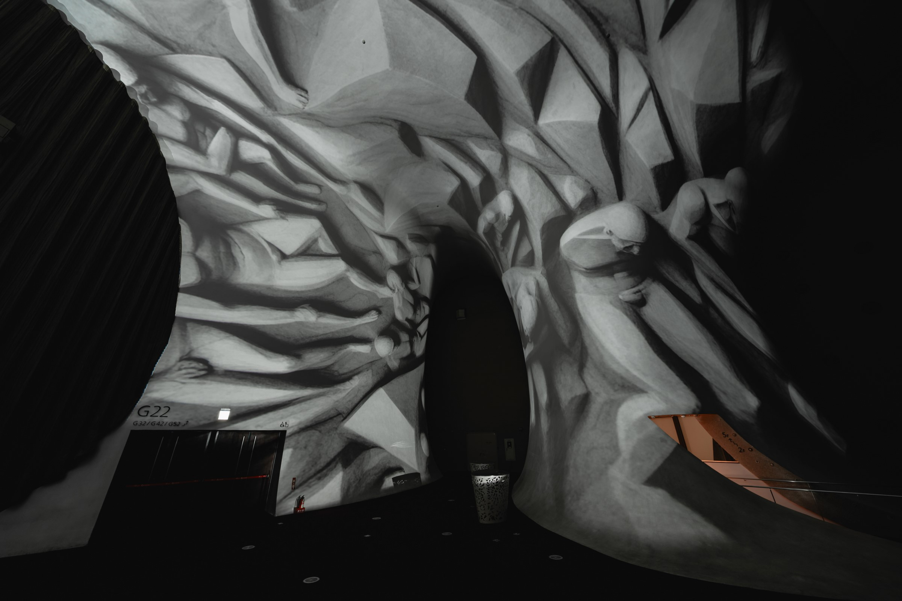
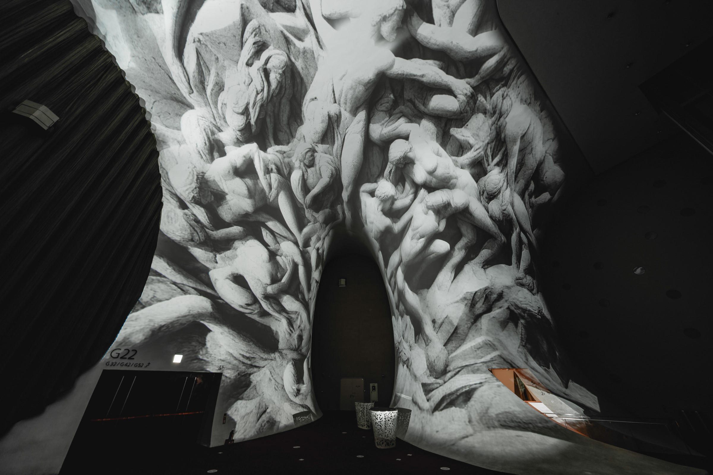

Homoform
Audio-Visual Screening
2024
Credits:
Visual: HUANG WEI
Sound: CHUANG SHENG-KAI
Project Manager: LIU TUNG-YU
Presented at T.A.P. Project, National Taichung Theater - Taichung

AI algorithms carve out the inner life within architecture, showcasing geometric shapes, organic growth, and humanoid-nonhumanoid relief spectacles on curved surfaces. Visual sensations spread amidst polyphonic musical sounds, creating an extraordinary sense of beauty where forms flow between order and disorder. Akin to gazing upon the world from a child's perspective. Static sculptures gradually expand through imagination, entering into a wondrous space of a sensory playground.
以AI 演算刻鑿出建築內在生命，在曲幕壁面上展現幾何結構、有機生長、似人非人的浮雕巨觀，在複音音樂聲中將視覺感受蔓延，營造形體在有序無序間流動的特異美感，如同從孩童視角仰望世界，靜態雕塑透過想像力逐漸擴展，進入感官遊樂園般的奇妙空間。







National Taichung Theater - Photos by 林峻永